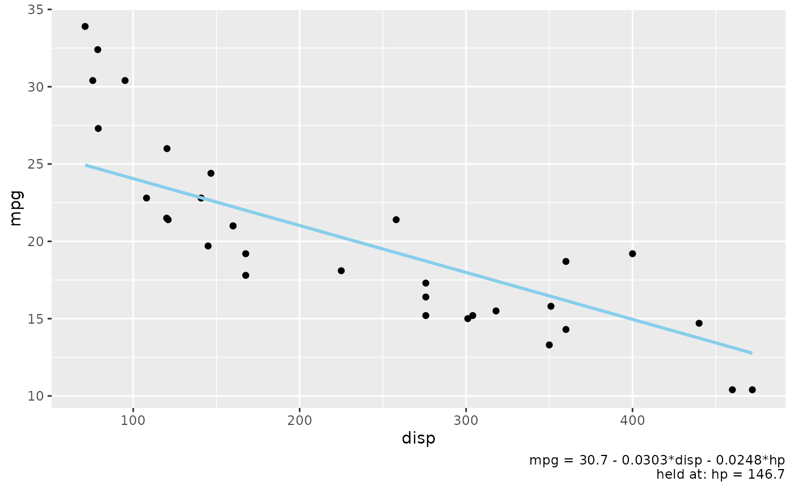

Describe the lines drawn by geom_slice() in the plot caption
Source:R/geom_slice_caption.R
geom_slice_caption.Rdgeom_slice_caption() is geom_slice_subtitle() for the plot caption: it
fills the caption (right-aligned in ggplot2's default themes) with the
model equation and the held values the plot does not otherwise show. All
behavior — what is reported, what is skipped because the legend, facets,
or geom_slice_text() already label it, and every parameter — matches
geom_slice_subtitle(); see its documentation for the details.
Arguments
- model
If
TRUE(default), the subtitle's first line is the model equation;FALSEdrops it, leaving only the held-values line.- prepend, append
Plain strings pasted before the first line and after the last line of the default subtitle.
- ...
Passed to
lm_equation()when the equation is written, under its own argument names — chieflystyle, which controls how factor terms are labelled.Left unset,
styleis chosen to fit: withwrapon, the equation is tried spelled out (4.09*(Species="setosa")) and briefly (4.09*[setosa]), each with and without the hanging indent, preferring the spelled-out form and giving up the indent last. The first that fits wins, and a message says so if the brief form did. Because the indent goes last, a narrower plot can bring the full names back. The brief form is never offered when two terms would shorten to the same label — a bare[High]from two different factors no longer says which it meant.Naming
styleyourself pins it and switches all of that off. Pin it (or givewrapa width) when the annotation must come out the same whatever size device it is drawn on.- wrap
Controls wrapping of lines too long to fit.
TRUE(default) measures how much room the subtitle has in this plot on the current graphics device and breaks long lines to fit, between terms only, with continuation lines hanging under the right-hand side of the equal sign.FALSEleaves the text as one line per item, however far it runs off the plot. A number is a width in inches to wrap to instead of measuring — useful when the plot will be drawn at a size other than the current device, as withggsave(width = ).
See also
geom_slice_subtitle() for the full documentation of what is
reported; geom_slice() for the layers being described;
geom_slice_text() to label the lines themselves.
Examples
library(ggplot2)
# Caption reports the model equation and that hp is held at its mean
model <- lm(mpg ~ disp + hp, data = mtcars)
ggplot(mtcars, aes(disp, mpg)) +
geom_point() +
geom_slice(model) +
geom_slice_caption()
#> Value for `hp` not specified - Used mean: 146.7
#> To choose a slice, use 'predict_vars = list(hp = 146.7)'.
